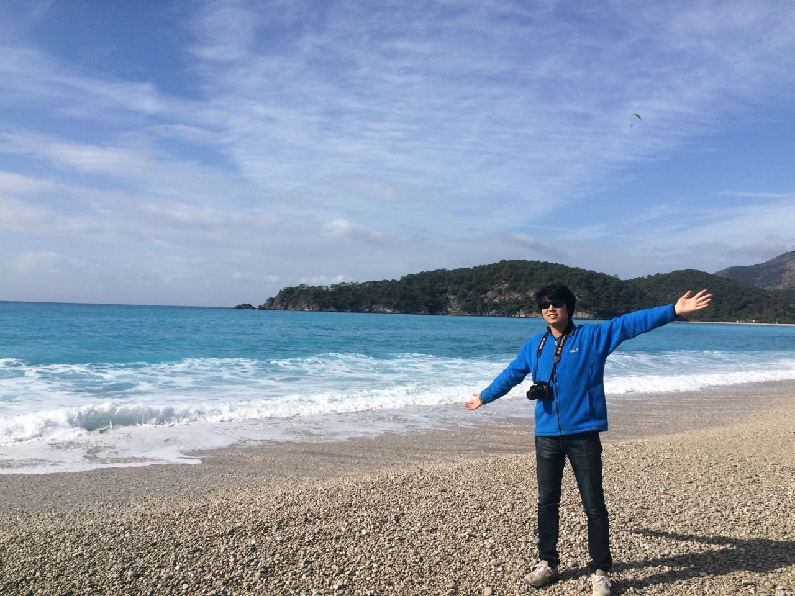

在迷惘中坚持，在交流中成长。
出游土耳其§
2016 年 2 月，我去土耳其游玩了半个月。
即使是我蹩脚的英语，也挡不住土耳其人的热情。
蔚蓝的天空和大海：

形似雪山的棉花堡：

外星地貌的卡帕多奇亚

遍地清真寺的伊斯坦布尔

这里留下了太多回忆。
入职微软§
之前已经有一个总结贴了：我来微软这半年，这里就不赘述了。
GitHub§
都说三十不惑，现在我还可以再迷惘几年。
这一年里思考过很多次自己的未来，可是依然没有得到明确的答案。
过去的经验告诉我，当你迷惘的时候，就去做一些有积累的事儿。当你不惑的时候，就是厚积薄发的时候了。
我一直都把 GitHub 当作我的第二个家，看到我的积累慢慢有人认同，是一件非常有成就感的事情。
回顾了一下 2016 年我在 GitHub 上做的事情：
- 加入了 nodejs organization，成为了 Node.js Website Working Group Collaborators 中的一员
- 在研究 Bootstrap 4 的时候，给它提了几个 pr
- 加入了 Microsoft organization
- 给 live.nodejs.org 加入了多语言支持
- 持续更新 JekyllCN 和 React IE8
- 给阮一峰的《 ECMAScript 6 入门》提了十多个 pull request
- 开始写一本书《 From JavaScript to TypeScript 》
- 写了几个 Hexo 的插件和一个 Hexo 的主题
- 开源了 Mobi.css，一个轻量灵活的移动端 CSS 框架。并在 7 天内获得了 600 个 Stars
- 做了个 Markdown 编辑器码字 md
- 给 SimpleMDE 添加了主题系统
- 产生了各种各样稀奇古怪的点子
持续的贡献，也让我收获了一些 stars 和 follows，慢慢的开始有人叫我大神。
然而，懂的东西越多，就越能看清自己的差距。我离自己心目中的大神还差很多，以后请还是叫我小猫吧 😺
博客§
2016 年写了 16 篇博客，平均下来一个月产出 1.3 篇，虽然不多，但是能够一直坚持下来，也是件不容易的事儿。
比较有代表性的有：
更多可以看我的博客主页。
新朋友§
一直以来，我都把微信视作私密的聊天工具。
但是结实了一些陌生人之后，让我觉得能够与有共同理想共同爱好的人一起交流，会有更大的进步。
感谢各路大神们愿意与我交朋友 @Steve Mao @designer @代码家 @88250 @狼叔 @justjavac @sneezry @青蛙 @Robert Chang @Vanessa @小爝 @芋头 @子骅
2017 年展望§
经历了很多次制定目标后又无法完成，我渐渐明白，自己是一个不善于规划，而依赖于灵感的人。
经常一个灵感来了，就渐渐偏离了之前规划的道路。
所以这次，我给自己一个自由，看看 2017 年能创造怎样的精彩。